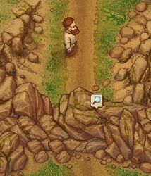
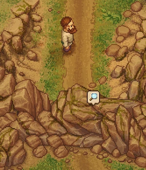
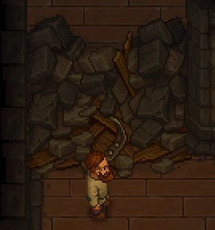
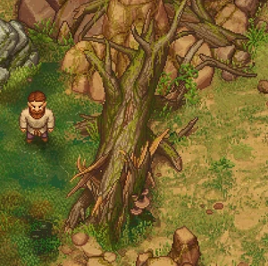

Blockage
| Blockage | |
|---|---|
 | |
Basic information
| |
Location(s)
| |
| Alchemy lab, Cellar, Barn cellar, Trade Office, Dungeon, Morgue, and some roads and paths |

The blockage appears as a collapsed section in the tunnels connecting the alchemy lab, cellar, barn cellar, trade office, dungeon and morgue. You will need to clear at least one blockage to get access to Snake, the cultist.
There are also blockages between the apiary and the upper forest area of the map, as well as between the swamp and the quarry. The path from the workyard to the vineyard is blocked by a large fallen tree.
The old stone bridge and the swamp bridge need to be repaired as well.
Cost
| Icon | Materials Required | Energy | Notes |
|---|---|---|---|
| 10× Wood wedge 2× Wooden plank |
- |
two in the cellar and two blocking the paths to the quarry |
Operations
| Operation | Materials Required | Energy | Notes |
|---|---|---|---|
| Clear the path |
10× Wood wedge |
- |
the three basements of the church |
| Operation | Materials Required | Energy | Notes |
|---|---|---|---|
| Clear the path |
10× Wood wedge |
- |
Way to the Vineyard |
| Operation | Materials Required | Energy | Notes |
|---|---|---|---|
| Repair Bridge |
4× Flitch |
- |
Cemetery to Swamp |
| Operation | Materials Required | Energy | Notes |
|---|---|---|---|
| Build the Bridge |
6× Flitch |
- |
passage for Clotho |
Screenshots

This is how it looks when a collapsed cliff side is blocking a road.


This is how it looks when a collapsed wall is blocking a tunnel in the cellar.


This is how it looks when a fallen tree blocks the path from the swamp north of your home to the hill with the vineyard.
| ||||||||